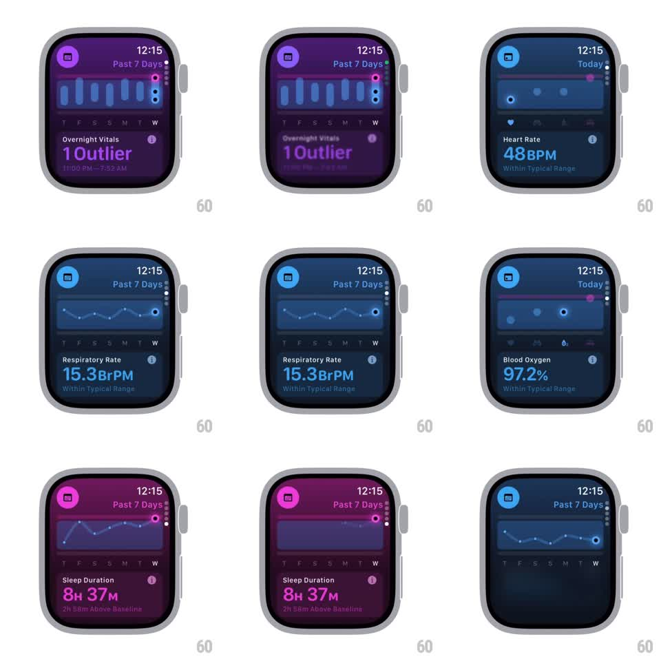

Media
Frame-by-frame

Rebuild this animation 1:1: Apple Watch Vitals - scrolling through health metric cards crossfades each card's accent color (purple, blue, pink) and fluidly morphs the graph between bar and line styles while values and range labels swap.

Rebuild this animation 1:1: Apple Watch Vitals - scrolling through health metric cards crossfades each card's accent color (purple, blue, pink) and fluidly morphs the graph between bar and line styles while values and range labels swap.
## Integration
Integration: stack-agnostic spec - springs given as stiffness/damping, timed motions as duration + curve; map every value to your framework and animation library of choice.
## Scene
Watch-face-sized dark cards, one metric per card: header icon + time, "Past 7 Days"/"Today" tab labels, a graph zone (7-day bar chart or line chart with day letters T F S S M T W), metric name ("Overnight Vitals", "Heart Rate", "Respiratory Rate", "Blood Oxygen", "Sleep Duration"), big value, and a status line ("1 Outlier", "Within Typical Range", "2H 58M Above Baseline").
## Motion spec
Pattern: scroll-driven card transitions with graph morphing.
- Vertical scroll/crown: outgoing card's content fades + slides up (~200ms) as the incoming card's content slides up from below with a slight scale 0.96 -> 1 (~250ms, ease-out).
- Accent color: the whole card's tint (icon chip, tab highlight, graph stroke, value text) crossfades to the new metric's hue (~300ms) - purple for vitals, blue for heart/respiratory, pink for sleep.
- Graph morph: bar chart <-> line chart transitions interpolate point positions vertically (~350ms, ease-in-out); today-view swaps to a dot-scatter layout.
- Status line and value swap with a quick fade (150ms), slightly after the graph starts.
## Calibration
- Color identity is per-metric and total - no mixed hues during the crossfade.
- Graph morph keeps the same 7-day x-positions; only y values and style change.
## Reduced motion
Cards crossfade without slide; graph swaps without morph.
## Don't miss
- Day letters stay pinned while the graph morphs above them.
- The outlier metric (purple) uses bar highlighting on the outlier day.